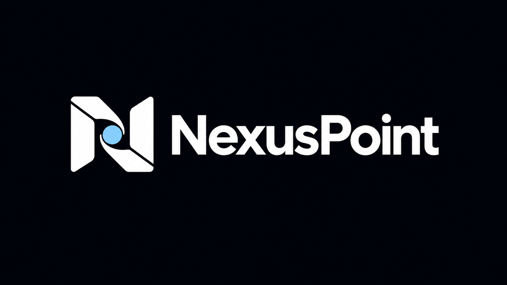
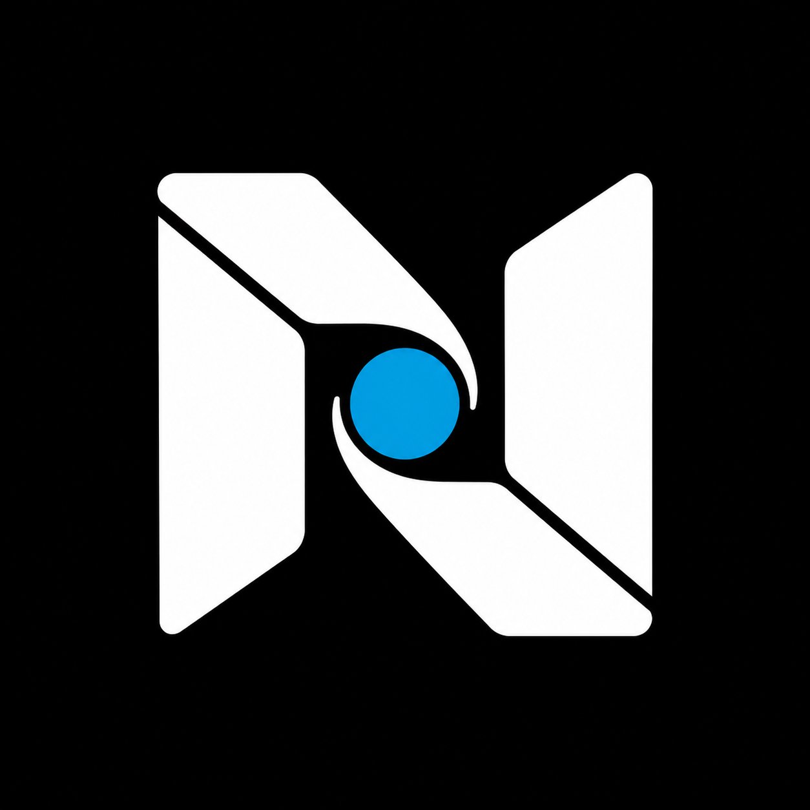
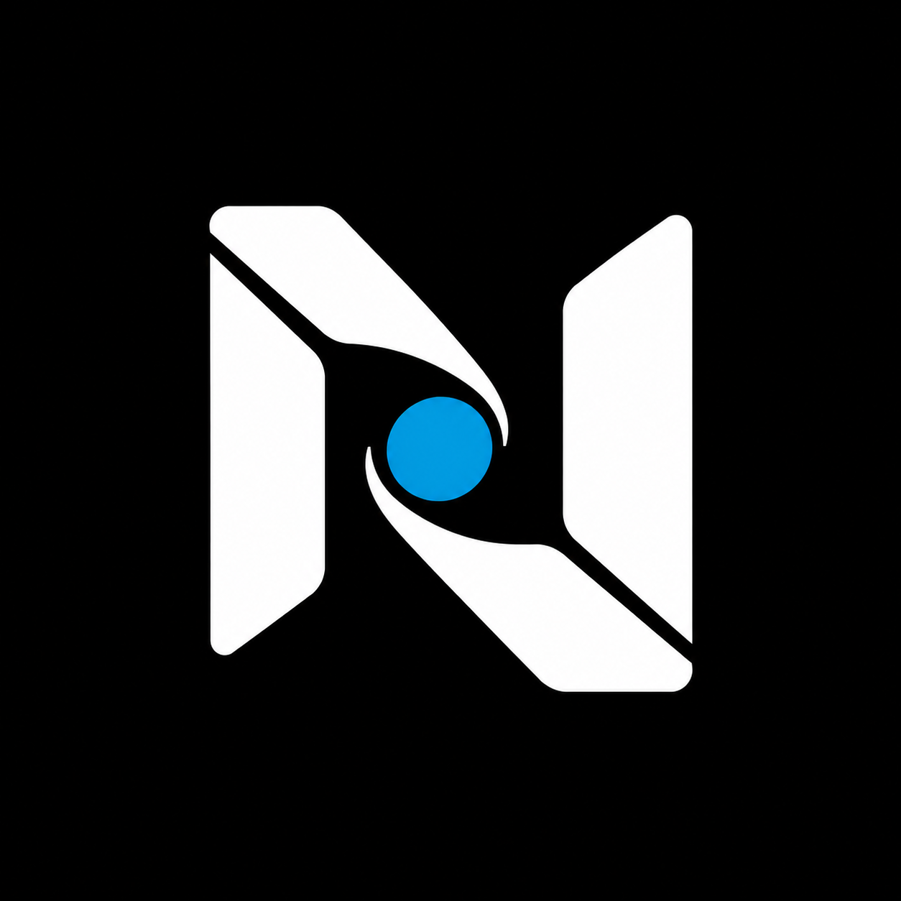
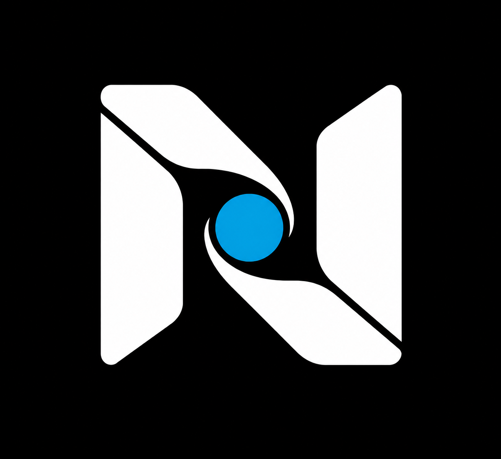
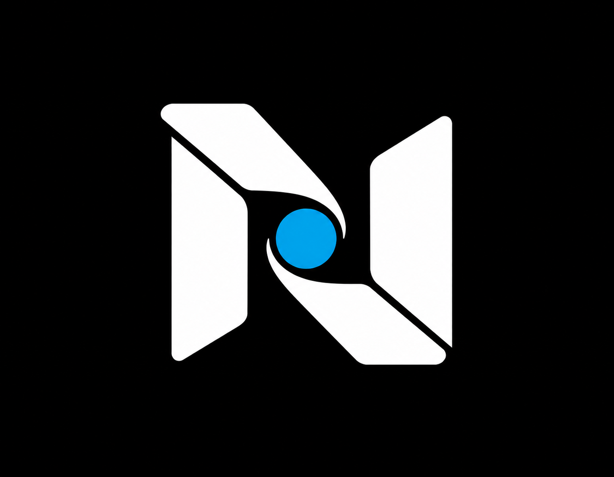

NEXUSPOINT / PREFERRED CONCEPT REFINEMENTS
Folded Core, four directions.
The tight centre curl and angled N from your preferred reference.
YOUR PREFERRED REFERENCE

01 / Precision Fold

Closest refinement. Sharper seams and balanced folded geometry.
02 / Open Core

Slimmer panels and a wider centre opening make the symbol breathe.
03 / Sculpted Ribbon

Softer transitions give the fold a fluid, sculpted character.
04 / Offset Fold

Staggered ends and unequal folds add controlled asymmetry.
Concept previews from your supplied reference. Symbols shown at equal height. Existing agency wordmark retained.